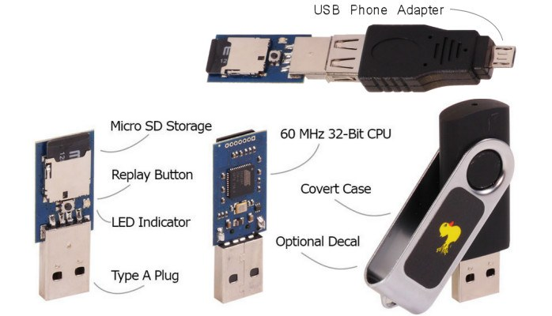
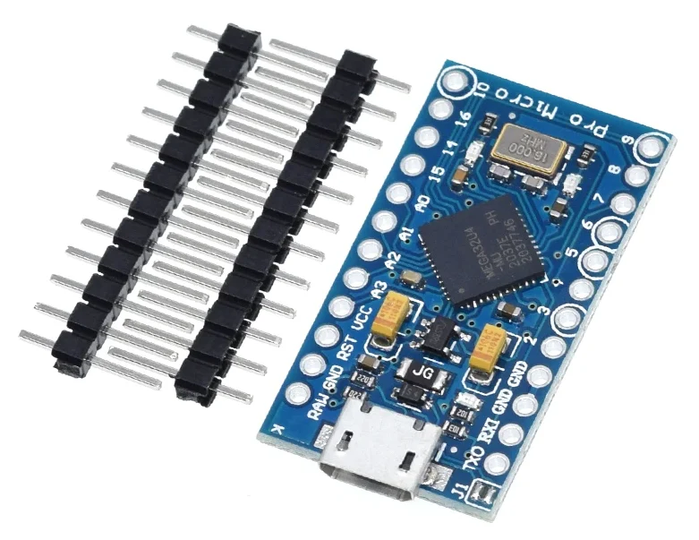

Bad USB là một loại tấn công phần mềm độc hại nhắm vào các thiết bị USB. Khi một thiết bị Bad USB được cắm vào máy tính, nó có thể tự động thực thi mã độc mà không cần sự tương tác của người dùng.
BadUSB hoạt động bằng cách ghi lại chương trình cơ sở (firmware) của thiết bị USB với mã độc. Khi thiết bị USB được cắm vào máy tính, mã độc sẽ tự động thực thi mà không cần sự tương tác của người dùng.
- Đối với những loại USB lưu trữ thông thường, hacker có thể lấy firmware của nhà sản xuất tương ứng, cài thêm mã độc vào đó. Đầu tiên cần lấy thông tin của USB (model, driver version,...). Tuỳ nhà sản xuất mà họ sẽ cung cấp thêm công cụ để chỉnh sửa firmware hay không, nếu không có thì chúng ta phải reverse engineer để lấy firmware thông qua các công cụ dùng để debug phần cứng như jtag. Bạn đọc có thể xem thêm tại: Reddit
- Tuy nhiên cũng có những loại USB đã được phát triển và tích hợp sẵn các công cụ cần thiết như USB Rubber Ducky của hãng Hak5 hay MalDuino của hãng Maltronics. Thậm chí Hak5 còn phát triển một ngôn ngữ lập trình riêng là Ducky Script để giúp việc cài đặt code cho USB dễ dàng hơn. Đổi lại, giá thành của nó lại cực kỳ đắt đỏ so với USB lưu trữ thông thường. 
- Một cách khác và cũng là cách được sử dụng trong bài viết này đó chính là sử dụng vi mạch như Arduino, cụ thể là Arduino Pro Micro. Lí do chúng ta sử dụng phiên bản Pro Micro là vì đầu USB của nó bên cạnh khả năng nạp code còn có thể được nhận dạng như một thiết bị ngoại vi (HID). Tuy nhiên cũng có chút phiền toái vì sau khi nạp code USB sẽ thực thi ngay code đó tại máy nạp :vv. Giá thành của mạch cũng không quá đắt, chỉ tầm 100k, nhưng lại không có bộ nhớ sẵn, nếu muốn thì phải upload lên server nào đó hoặc lắp thêm thẻ nhớ.
Kỹ thuật chúng ta sử dụng là keystroke injection, arduino của chúng ta sẽ được nhận dạng như một bàn phím và gõ các phím theo code từ trước. Code được xây dựng dựa trên một phần các repo của tác giả tuconnaisyouknow.
Keystroke injection sử dụng thư viện Keyboard.h để nhập ký tự.
Hàm typeKey dùng để gõ một phím tuỳ ý, runCommand dùng để nhập một chuỗi và nhấn enter.
Để tránh trường hợp sau khi nạp code, code sẽ thực thi luôn thì mình sử dụng serial monitor để giao tiếp với usb. Chỉ khi người dùng nhắn chuỗi "meowchiato" thông qua serial thì usb mới thực thi code, usb sẽ check việc nhắn này mỗi 5s. Trong trường hợp thực tế, chúng ta chỉ cần đưa hàm run() hay code mong muốn vào hàm setup và để trống hàm loop() là được.
Bạn đọc cài đặt bot telegram, upload file,... xem tại: Here.
telegram_uploader.py thông dịch thành file .exe, được sử dụng để gửi file zip kết quả đến bot telegram thông qua api của bot.
Mình không sử dụng các file ps1 giống tác giả vì hiện tại không thể tắt được Windows Defender Real-time protection cũng như thêm ngoại lệ là đường dẫn file cũng vô dụng. Lí do là vì tính năng Tamper Protection của Windows sẽ chặn các cài đặt ảnh hưởng xấu tới Windows Defender từ bên ngoài, và giờ chỉ có thể tắt được từ trang cài đặt.
Trong file info_stealer mình chỉ dùng WebBrowserPassView để lấy mật khẩu lưu trên browser, bạn đọc có thể thêm file exe mong muốn vào. Tác giả tuconnaisyouknow có sử dụng thêm các ứng dụng để lấy lịch sử truy cập path, các kết nối trong mạng và mật khẩu wifi. Thậm chí có thể thêm cả reverse shell vào nếu bypass được Windows Defender.
Một số ứng dụng với bad usb khác có thể kể đến như tạo tài khoản có quyền admin, xoá mật khẩu windows, keylog, tạo lỗi màn hình xanh,... Bạn đọc có thể tham khảo thêm tại: tuconnaisyouknow, wangwei39120157028, caioau,...